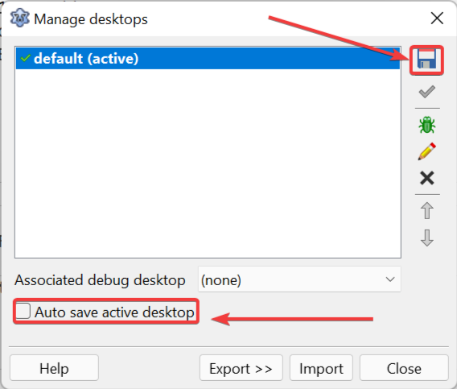

A primeira coisa a fazer depois de instalar o Lazarus e fazer estes ajustes iniciais é desligar a opção de auto salvamento de desktop. Desktop neste contexto é a visão do usuário, a forma como ele “docou” os painéis, posição das janelas ou redimensionamentos, basicamente o aspecto visual. Pois é, isso chama-se Desktop. O Lazarus salva seu desktop toda vez que você fechar a IDE, daí na próxima vez que for carregá-lo ele aparecerá exatamente como deixou antes. A princípio parece bom, mas se fizer “caquinha” na IDE, será “caquinha” que terá na próxima execução. Às vezes foi apenas uma tecla acidental que tirou as coisas do lugar e não temos a mínima ideia de como desfazer a “caquinha” e voltar ao que era antes então é minha opinião que esse “auto salvamento” deva ser salvo quando o ambiente está do jeito que gostamos e depois desligado para sempre que carregarmos a IDE ela voltar num ponto “limpo”. Vá em Tools->Desktop(Ferramentas->Área de Trabalho):

Clique “Save active desktop as” (Salvar o desktop ativo como) e mantenha o mesmo nome do perfil, isto é, “default”. Depois disso, nunca salve outro perfil por cima do default, ele será seu quarto do pânico para usá-lo quando as coisas derem errado.
E então desmarque a opção “Auto save active desktop” para desativar o auto salvamento, esta é uma recomendação pessoal.